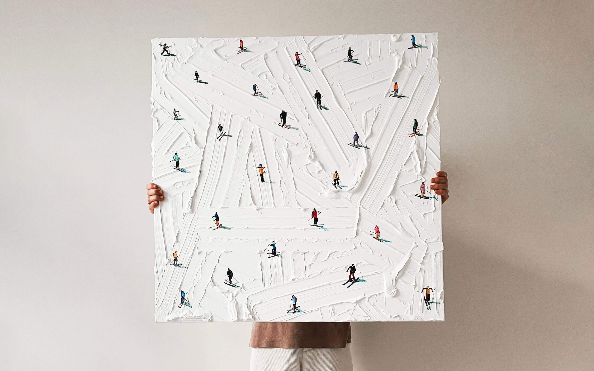
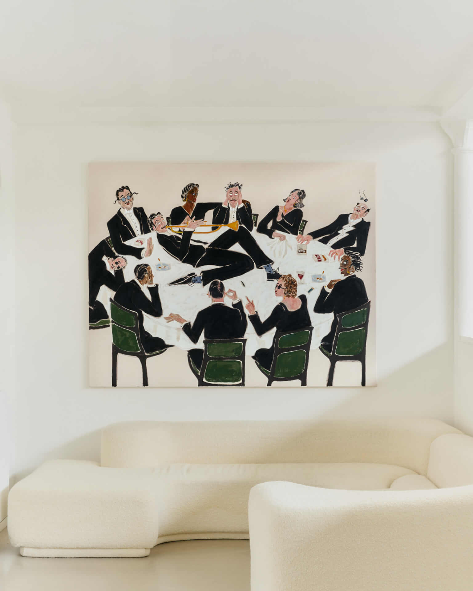
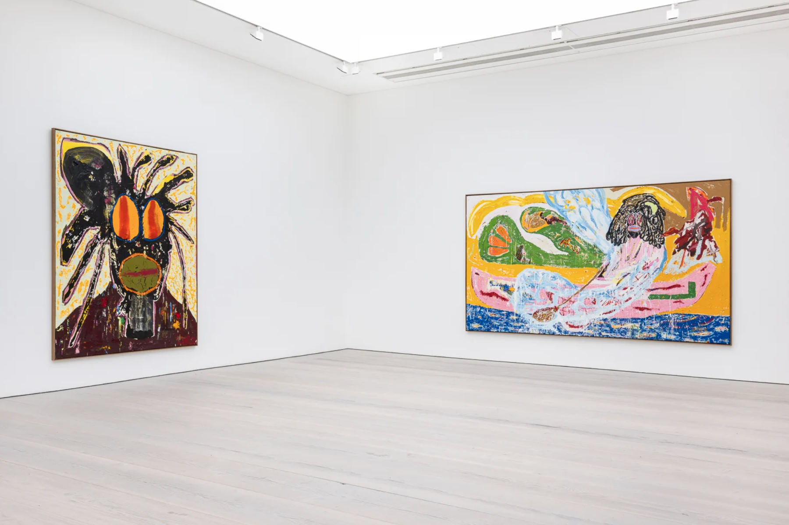

01
Purpose
The purpose of the site is to showcase painters my client believes in and explain why their work may continue growing in value and recognition.
Collector Perspective
This website highlights artists that my client, Joseph Besso, is currently collecting and following. The focus is on their strong visual identity, originality, and why their markets may continue to grow over time. The focus is on strong visual identity, originality, and why their markets may continue to grow over time.
Featured Artists
A curated look at selected painters and the reasons they stand out from a collector's point of view.
About the Site
01
The purpose of the site is to showcase painters my client believes in and explain why their work may continue growing in value and recognition.
02
The audience includes people interested in contemporary art, collecting, and discovering painters whose markets may still have strong upside.
03
Instead of crowding the page, the layout keeps attention on the work, the artist, and a short collector thesis for each painter.
Preview

Recognizable visual storytelling and bold compositions that make the work memorable.

Strong identity, distinctive character, and work that feels immediate and unique.

Original paintings with depth and perspective that add range to the overall collection thesis.